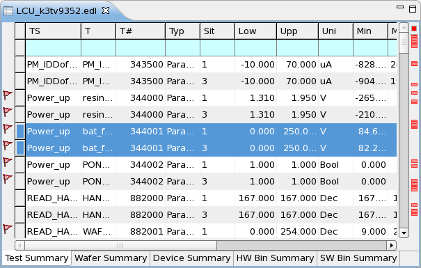

Separating summary results by wafer, site, or pin
Test summaries can be split into summaries for the tested wafers, sites, or pins using toolbar buttons or shortcut menu commands. In a similar way, you can split bin summaries into individual sites.
About this task
Separate summary results if you want to examine the wafers, sites or pins separately or create graphs (such as trend charts) comparing them.
Before you begin
Open the data log that contains the summaries you want to examine.
Procedure
-
Choose the desired grouping from the Group By submenu of the context
menu or click the corresponding toolbar button:
 Group by wafer
Group by wafer Group by site
Group by site Group by pin
Group by pin
Results
The test or bin summaries in the tab are divided into one row per test(or bin) for each wafer, site, or pin (depending on the grouping chosen). If multiple groupings are chosen for test summaries, each test is divided into one row for each combination of the chosen categories. (For example, one row for each combination of site and pin.)
Example
In the following image of a test summary tab grouped by wafer, the two highlighted rows display results from the same test but for different wafers (1 and 3). In an ungrouped tab, these results would be displayed as a single row.

What to do next
Analyze the results, for example by opening the grouped test in an analysis view.
Functional changes
- Introduced in SmarTest 7.2.0